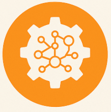
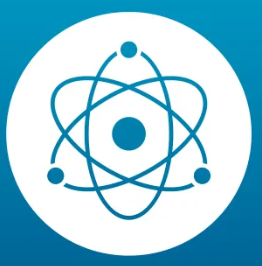

Completed virtual internship focused on industry-relevant skills and real-world problem solving.
Skills: Industry Projects, Problem Solving

Worked on Machine Learning models, data preprocessing, and applied algorithms to real-world datasets.
Skills: Python, ML, Data Analysis

Worked on data cleaning, visualization, and deriving insights using analytics tools and real-world datasets.
Skills: Data Analysis, Power BI, Excel